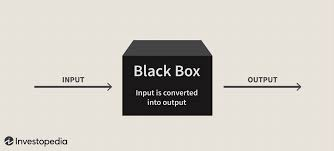
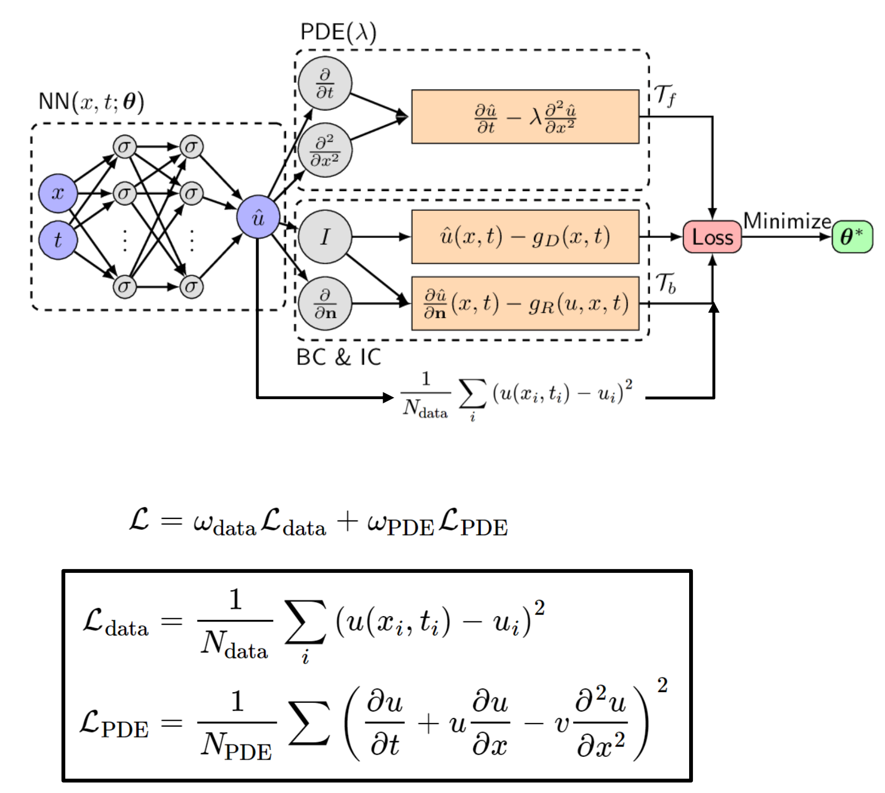
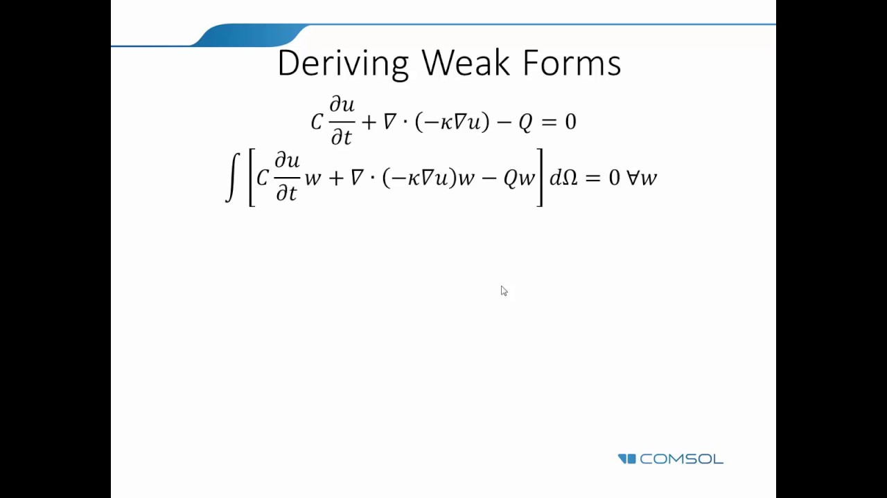
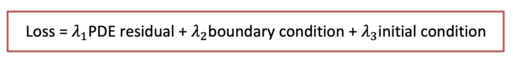
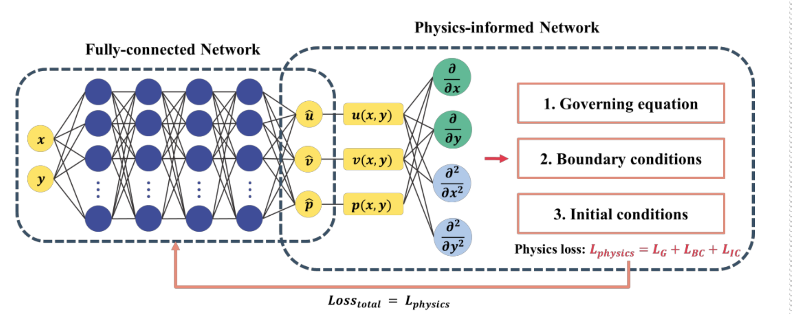
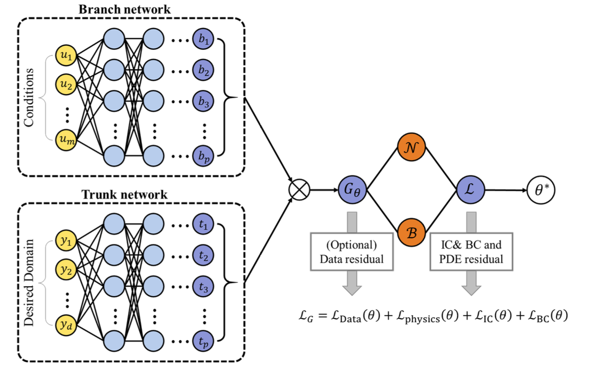

<!DOCTYPE html>
<html lang="ko" data-theme="light">
<head>
  <meta charset="utf-8">
  <meta name="viewport" content="width=device-width, initial-scale=1">
  <title>Physical Informed Neural Network (PINN) &amp; Operator Learning | Sehyeog Kim</title>
  <link rel="stylesheet" href="../../../../assets/css/style.css">
  <script>!function(){var t=localStorage.getItem("theme")||"light";document.documentElement.setAttribute("data-theme",t)}();</script>
</head>
<body>
  <button class="theme-toggle" aria-label="Toggle theme"><svg class="icon-sun" viewBox="0 0 24 24" fill="none" stroke="currentColor" stroke-width="2" stroke-linecap="round" stroke-linejoin="round"><circle cx="12" cy="12" r="5"/><line x1="12" y1="1" x2="12" y2="3"/><line x1="12" y1="21" x2="12" y2="23"/><line x1="4.22" y1="4.22" x2="5.64" y2="5.64"/><line x1="18.36" y1="18.36" x2="19.78" y2="19.78"/><line x1="1" y1="12" x2="3" y2="12"/><line x1="21" y1="12" x2="23" y2="12"/><line x1="4.22" y1="19.78" x2="5.64" y2="18.36"/><line x1="18.36" y1="5.64" x2="19.78" y2="4.22"/></svg><svg class="icon-moon" viewBox="0 0 24 24" fill="none" stroke="currentColor" stroke-width="2" stroke-linecap="round" stroke-linejoin="round"><path d="M21 12.79A9 9 0 1 1 11.21 3 7 7 0 0 0 21 12.79z"/></svg></button>

  <header class="mobile-header">
    <span class="site-title">Sehyeog Kim</span>
    <button class="menu-toggle" aria-label="Menu">&#9776;</button>
  </header>
  <div class="sidebar-overlay"></div>

  <div class="site-wrapper">
    <aside class="sidebar">
      <div class="sidebar-bg">
        
      </div>
      <div class="sidebar-profile">
        
        <h1 class="profile-name">Sehyeog Kim</h1>
        <p class="profile-bio">AI &amp; Computational Engineering<br>Personal Blog</p>
        <div class="profile-links">
          <a href="https://github.com/Sehyeogkim" target="_blank" rel="noopener">
            <svg viewBox="0 0 16 16" width="15" height="15" fill="currentColor"><path d="M8 0C3.58 0 0 3.58 0 8c0 3.54 2.29 6.53 5.47 7.59.4.07.55-.17.55-.38 0-.19-.01-.82-.01-1.49-2.01.37-2.53-.49-2.69-.94-.09-.23-.48-.94-.82-1.13-.28-.15-.68-.52-.01-.53.63-.01 1.08.58 1.23.82.72 1.21 1.87.87 2.33.66.07-.52.28-.87.51-1.07-1.78-.2-3.64-.89-3.64-3.95 0-.87.31-1.59.82-2.15-.08-.2-.36-1.02.08-2.12 0 0 .67-.21 2.2.82.64-.18 1.32-.27 2-.27.68 0 1.36.09 2 .27 1.53-1.04 2.2-.82 2.2-.82.44 1.1.16 1.92.08 2.12.51.56.82 1.27.82 2.15 0 3.07-1.87 3.75-3.65 3.95.29.25.54.73.54 1.48 0 1.07-.01 1.93-.01 2.2 0 .21.15.46.55.38A8.013 8.013 0 0016 8c0-4.42-3.58-8-8-8z"/></svg> GitHub
          </a>
        </div>
      </div>
      <nav class="sidebar-nav">
        <a href="/" class="nav-item nav-home">Home</a>
        <span class="nav-group-label">AI</span>
        <a href="/blog/ai/agentic-ai-theory/" class="nav-item">Agentic_AI_Theory<span class="nav-post-count">8</span></a>
        <a href="/blog/ai/deep-learning/" class="nav-item active">Deep-learning<span class="nav-post-count">14</span></a>
        <a href="/blog/ai/machine-learning/" class="nav-item">Machine_Learning<span class="nav-post-count">11</span></a>
        <a href="/blog/ai/sensitivity-analysis/" class="nav-item">Sensitivity_Analysis<span class="nav-post-count">3</span></a>
        <span class="nav-group-label">AI_Application</span>
        <a href="/blog/ai_application/claude/" class="nav-item">Claude<span class="nav-post-count">2</span></a>
        <span class="nav-group-label">BioMechanics</span>
        <a href="/blog/biomechanics/blood-flow-and-metabolism/" class="nav-item">Blood-Flow-and-Metabolism<span class="nav-post-count">12</span></a>
        <a href="/blog/biomechanics/cardiovascular-diseases/" class="nav-item">CardioVascular_Diseases<span class="nav-post-count">8</span></a>
        <span class="nav-group-label">Mechanical_Engineering</span>
        <a href="/blog/mechanical-engineering/computational-linear-algebra/" class="nav-item">Computational-Linear-Algebra<span class="nav-post-count">15</span></a>
        <a href="/blog/mechanical-engineering/computational-fluid-dynamics/" class="nav-item">Computational_Fluid_Dynamics<span class="nav-post-count">14</span></a>
        <a href="/blog/mechanical-engineering/continuum-mechanics/" class="nav-item">Continuum-Mechanics<span class="nav-post-count">9</span></a>
        <a href="/blog/mechanical-engineering/engineering-mathematics/" class="nav-item">Engineering_Mathematics<span class="nav-post-count">14</span></a>
        <a href="/blog/mechanical-engineering/finite-element-method/" class="nav-item">Finite-Element-Method<span class="nav-post-count">1</span></a>
        <a href="/blog/mechanical-engineering/fluid-mechanics/" class="nav-item">Fluid_Mechanics<span class="nav-post-count">18</span></a>
        <a href="/blog/mechanical-engineering/gas-dynamics/" class="nav-item">Gas_Dynamics<span class="nav-post-count">24</span></a>
        <a href="/blog/mechanical-engineering/heat-transfer/" class="nav-item">Heat-transfer<span class="nav-post-count">8</span></a>
        <a href="/blog/mechanical-engineering/solid-mechanics/" class="nav-item">Solid_Mechanics<span class="nav-post-count">25</span></a>
        <a href="/blog/mechanical-engineering/thermodynamics/" class="nav-item">Thermodynamics<span class="nav-post-count">14</span></a>
        <a href="/blog/mechanical-engineering/viscous-flow/" class="nav-item">Viscous_Flow<span class="nav-post-count">28</span></a>
      </nav>
    </aside>

    <main class="main-content">
      <div class="breadcrumb"><a href="/">Home</a><span class="sep">/</span><a href="/blog/ai/">AI</a><span class="sep">/</span><a href="/blog/ai/deep-learning/">Deep-learning</a><span class="sep">/</span><span>Physical Informed Neural Network (PINN) &amp; Operator Learning</span></div>
<a href="/blog/ai/deep-learning/" class="back-link">&larr; Back to Deep-learning</a>
<div class="page-header"><h1>Physical Informed Neural Network (PINN) &amp; Operator Learning</h1></div>
<div class="post-meta"><span class="meta-item"><span class="meta-label">Date:</span> 2024-12-11</span><span class="meta-item"><span class="meta-label">Category:</span> Deep-learning</span><span class="meta-item"><span class="meta-label">Source:</span> <a href="https://jeffdissel.tistory.com/m/145" target="_blank" rel="noopener">link</a></span></div>
<article class="post-content"><p>Physical Informed Neural Network (PINN) &amp; Operator Learning<br />
지금 까지 배웠던 모델들의 학습방식과<br />
완전 다른 새로운 Neural Network에 대해서 배워보자.<br />
So far, Data-driven approach로 학습을 진행하였다.<br />
즉, data를 많이 가지고 있을수록, 모델의 정확성은 올라간다.<br />
<br />
ANN구조<br />
Data-driven approach에는 치명적인 두가지 단점이 존재한다.<br />
1. Black box.<br />
<br />
아무리 좋은 모델이라고 할지라도,<br />
우리는 정작 input-output의 관계를 설명할 수 없다.<br />
즉, 모델의 메커니즘을 해석할수 없다는 것이다.<br />
y= f(x) 에서 y:output, x: input이라고 한다면,<br />
함수 f를 정의할 수 없다.<br />
2. Out of the boundary.<br />
가지고 있는 데이터의 boundary<br />
밖의 정보에 대해서 불확실성이 크다.<br />
<br />
위 그림을 보면, interpolation부분을 데이터를 가지고 학습했다고 가정하자.<br />
이외의 실제 데이터가 빨간색과 같을지라도, Neural network는 regression을 통해<br />
가지고 있는 데이터를 통한 최적의 파란색 답을 도출할 것이다.<br />
이에, 가지고 있는 데이터와 더해서,<br />
만족해야하는 physical equation이 존재하다면,<br />
그것도 만족하도록 구성한 모델이 바로,<br />
Physical Informed Neural Network(PINN)이다.<br />
<br />
위에서 보이는 것처럼,<br />
x,t로 부터<br />
u를 먼저 도출<br />
하고,<br />
u에 differential operation을 진행 해준후,<br />
PDE, BC, IC 을 만족하는지 Loss값을 계산하여<br />
손실함수가 적어지더록 가중치들을 수정하는<br />
작업을 진행한다.<br />
여기서 크기 손실함수는 가지고 있는 정보에 따라서,<br />
DATA,<br />
Governing Equations,<br />
Boundary condition,<br />
Inital condition<br />
이렇게 구분지을 수 있다.<br />
지금까지 다루었던 부분들은,<br />
x,t를 가지고 정확한 u를 예측하는<br />
Forward Problem<br />
이었고,<br />
반대로 x,t,u를 가지고 있을때,<br />
governing Eq, IC, BC를 예측하는<br />
Inverse problem을 푸는 모델도 계발할 수 있다.<br />
<br />
ex)<br />
만약에 PDE의 계수를 모르는 다음과 같은 경우에<br />
내가 x,t,u 데이터를 가지고 있는 상황이라면,<br />
PINN모델을 활용하여<br />
parameter estimation<br />
을 진행할 수 있다.<br />
<br />
뿐만아니라, 다음과 같이 BC을 모르는 상황에서도,<br />
같은 방식으로 가지고 있는 데이터를 활용하여<br />
Estimation을 진행할 수 있다.<br />
<br />
[PINN의 한계]<br />
1. Automamtic differentiation.(chain rule 사용)<br />
:불연속점, 미분불가능 점에서 convergence issue가 발생한다.<br />
해결책: weak form PDE<br />
적분형태로, 미분차수를 낮추어 준다.<br />
<br />
2. 다양한 loss가 존재.<br />
<br />
거듭 이야기 했다 싶이, 가지고 있는 정보에 따라서,<br />
loss function의 종류도 다양하다.<br />
하지만 여기서 문제가 존재한다.<br />
각각의 loss값마다 gradient가 전부 다를 것이기 때문이다.<br />
-&gt; adaptive loss weighting<br />
loss값들 중에서 작은 값은 그대로 두고,<br />
나머지 Weight들만 조절.<br />
[Operator Learning]<br />
PINN에서 가지고 있는 방정식, boundary condition, inital conditoin<br />
데이터를 가지고<br />
모델을 학습 시켰다.<br />
만약에 BC만 바꾸고 바뀐 결과를 보고싶다면?<br />
처음부터 모델을 다시 학습해야한다.<br />
이는 굉장히 공학자로써 귀찮은 작업이다.<br />
보통 physical equation들은 BC, IC를 바꿔가며<br />
방정식을 계산하기 때문이다.<br />
이를 해결하는 Model 이 바로,<br />
Operator Learning model<br />
이다.<br />
DeepOnet 이라 불리는 model은 다음과 같다.<br />
(상황을 잘 이해해야 한다)<br />
y: 위치정보 [y1,y2,...yd] 벡터형태.<br />
u: 각 위치에 inital or boundary condition<br />
t = t(y), y에관한 함수.<br />
<br />
즉, y,u를 쪼갠후,<br />
각자의 network에 짚어 넣는다.<br />
Branch network, Trunk network 결국 둘다<br />
p개의 어떠한 계수를 Output한다.<br />
이후에, 합성곱을 통해서 G라는 최종함수가 도출된다.<br />
여기서 핵심은 t = t(y), G = G(y)라는 점이다<br />
즉, 최종 Output한 함수는<br />
위 그림처럼 각 위치에 따른, 사용자가 원하는 정보를 output해준다.<br />
정리해보면,<br />
어떠한 boundary condition(특정 한정된 위치에서의 함수값, u(x))<br />
-&gt;<br />
전체 domain에서의 함수값(G(y))를 예측하는 게 바로<br />
DEEP ONET 이었다.<br />
이게, 연산자랑 무슨 상관이지 라는 의문이 들었는데.....<br />
함수 -&gt; 함수 mapping 하는 과정이므로<br />
Operator Learning<br />
이라는 명칭이 붙는 것이었다.</p>
<hr />
<p>여기에 한 숟가락 더 떠서,<br />
G(y) -&gt; Data residual 까지는<br />
Deep ONet<br />
에서 완료하였고,<br />
뒤에 , PDE, BC, IC각각 loss를 추가해주면<br />
PINN- Deep Onet<br />
이 탄생한다.<br />
<br />
이렇게 하면, 당연히 더 적은 data로도 모델을 학습가능하다.</p>
<hr />
<p>지금까지 배운 세개의 모델을 비교하면서,<br />
총정리해보자.<br />
1. PINN<br />
<br />
input: geometry(x,y)<br />
output: physical quantites(u,v,p...)<br />
Neural NetworkL: Single<br />
2.DEEP Onet<br />
<br />
Input: PDE condition(u(x)), geometry(y)<br />
output: Basis function(t), Basis coefficient(b) -&gt; G(u)(y)<br />
Neural NetworkL: two(Branch, Trunk net)<br />
3.PI_DEEP Onet<br />
<br />
Input: PDE condition(u(x)), geometry(y)<br />
output: Basis function(t), Basis coefficient(b) -&gt; G(u)(y)<br />
Neural NetworkL: two(Branch, Trunk net)</p></article>
      <footer class="site-footer">
        <p>&copy; 2026 Sehyeog Kim</p>
      </footer>
    </main>
  </div>
  <script src="../../../../assets/js/main.js"></script>
</body>
</html>